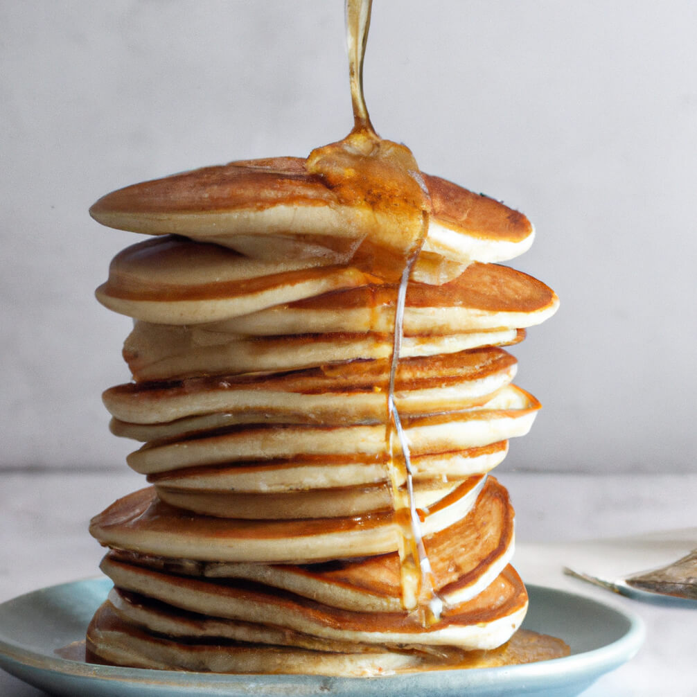

My-Hop Pancakes

Desciprion
These delicious breakfast cakes are said to resemble those from a famous pancake house. When replacing milk for buttermilk, increase lemon juice to 1 1/2 tablespoons. Serve topped with butter.
Ingredients
- 1 cup buttermilk
- half cup vegetable oil
- half teaspoon vanilla extract
- half cup white sugar
- 1 cup all-purpose flour
- 1 teaspoon baking powder
- 1 teastpoon baking soda
- 1 dash salt
- 1 egg
- 1 teaspoon lemon juice
- 1 tablespoon butter
Steps
- Gather all ingredients
- Mix buttermilk
- Whisk egg and lemon juice together in a separate bowl
- Heat a large skillet over medium heat and grease with the butter
- Flip with spatula and brown the other side, about 2 more minutes
- Enjoy!